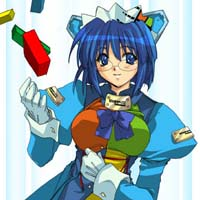

Which OStan are you?

You are Windows 2000 Professional Edition. You are the most stable and reliable of all the Windows girls. Of course, since your main comparison is with ME, that's not saying much. You're popular with some, but you're being replaced with XP. You often help take care of your sister ME.
Copy and paste the following code onto your livejournal!